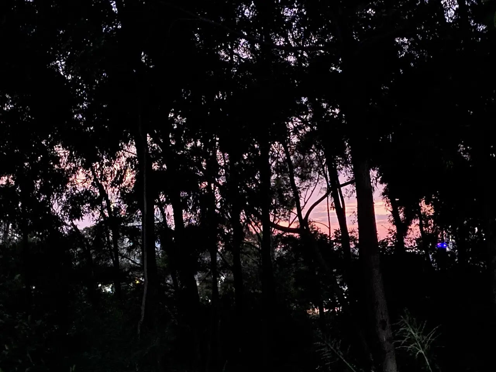

Zine#44
善意、远离手机、阅读、万圣节主题
🎵 LA LA MEANS I LOVE YOU - 山下達郎
{kind=link}

写 Zine 时又清理了一下订阅流，从里面找一些文章。日常#6::订阅流整理 里提到整理方法真的很好用，使用这个方法，我关注的作者不会淹没在一堆信息里；我关注的博客文章数量保持在可控范围，不会让我焦虑；不太感兴趣的博客我可以快速移动到更远区域，减少关注，偶尔空了看看标题就行。如果你也因为订阅流数量太多而焦虑、困扰，不妨尝试一下。
🕺 ☜ 别点。
News | Article
Remember to buy strawberries by Lars-Christian Simonsen
作者的 4 岁的女儿，有时会在他出门的时候跟他说，「Remember to buy strawberries!」。女儿这么做，或许只是希望让他开心。
一篇可爱的文章。
Newest photos by Dries Buytaert
wound(s) by Kevin
记录了作者手指受伤的一段经历。
It’s good to get a little hurt every once in a while, C said.
偶尔生点病、受点伤或许是件好事，它会让我们警醒，关注自己的身体，记住有一个健康的身体是件珍贵、幸福的事情。
I recommend getting a partner who thinks you're adorable by Megan Carnes
因为那样的话，你可能正在厨房里为工作准备午餐，而他们会说：「天哪。你把剩下的印度香饭装进一个小小的特百惠盒子里？然后你把它放进你的小饭盒里带去上班？那真是太可爱了。天哪。你太可爱了。」
在早上 7:30 做一些完全无聊和正常的事情，能得到别人的赞美，感觉真好，仅此而已。
自己也可以去成为这样的人，就像 Zine#42::Become the person that you would like to be around | postcards by hasif 里说的。
The Cruelty of Many, The Grace of One by Robert Kingett
作者是一位盲人，一天出行他的钱包掉了，只能跪在地上摸索，他很耻辱也慌张。人群穿行而过，没人帮助他。后来出现了一个人，他帮作者捡起了钱包，并给了他一个坚实而宽容的拥抱，带他脱离的困境。
很温暖的一个故事，推荐看原文。
世界上有很多人会径直走过一个跪着的人。但有时，如果你非常非常幸运，你会遇到那个会停下来，会抱住你，会给你一个安静的地方让你重新振作起来的人。
我也希望在困境中会遇到这样一个人，我也希望能成为这样的人。
作者最近又分享了一个他去帮助一个聋人的故事：A Bridge Made of Ableism.，作者虽然看不见，但他能听见、能感受到，从文字里能看到作者对于周围非常细腻的感知。
The Kingett Guide to Free Pizza by Robert Kingett
作者在网站订披萨，网站提供了一个优惠码，但作者输入之后发现没用。
面对这样的事情，我想大多数人都是生气的，或许会打电话投诉，找客服可能也是充满了怒气。
但作者打电话给客服，他是这么说的：
「嗨，布伦达，」我说，我的声音温暖而平静。「我叫罗伯特。我知道你的一天可能是一团糟，充满了愤怒的人，所以首先，谢谢你接电话。我保证不喊叫。」
沟通很顺利，最后作者得到了一个更大的优惠。
很佩服作者的同理心，如果我是那个客服，我也会很乐意帮作者处理他的问题。
推荐看看原文故事，喜欢作者的文笔。
这里，业余者犯了一个关键错误。他们大喊大叫。他们提出要求。这是不对的。不要攻击对方，而是让对方放松。同理心会让你走得很远。
In the economy of user effort, be a bargain, not a scam by Lea Verou
Simple things should be simple, complex things should be possible.
让简单的事情保持简单，复杂的事情变得可能。
⸺ Alan Kay
一篇关于用户体验不错的文章。
摘录
一个具有惊人预测能力的模型是将用户付出的努力视为用户为解决问题而花费的货币。没有人喜欢付出努力；在一个理想的世界里，软件会读懂我们的想法，并以零用户努力完美执行。由于我们不生活在这样的世界中，用户明白要付出一点努力才能实现他们的目标，并且当他们觉得自己的用例值得时，通常愿意付出更多。
就像常规定价一样，实际用户体验往往更多地取决于成本和预算之间的关系，而不是绝对成本本身。如果你支付的费用超出了预期，你会觉得被宰了。你可能仍然会支付，因为你当时需要该产品，但你将来会寻找更好的交易。如果你支付的费用低于你的预算，你会觉得你捡了个便宜，随之而来的是所有的喜悦和忠诚。
当用例复杂度的微小增加导致用户付出成本不成比例地大幅增加时，我们就遇到了可用性悬崖。可用性悬崖会让用户感到不满，就像我们虚构的披萨店的顾客一样。
可用性断崖在产品中非常常见，这些产品通过完全独立的流程，在简单的事情上做得容易，在复杂的事情上做得可能，但两者之间没有整合：一个是非常高层次的流程，迎合最常见的用例，几乎没有灵活性；另一个是非常低层次的流程，是一个逃生舱口：它允许用户做任何事情，但他们必须从头开始重新创建简单用例的解决方案，然后才能对其进行调整。
尊重用户投入。将其视为一种稀缺资源 ⸺ 就像普通货币一样 ⸺ 并使其尽可能接近表达意图所需的最低限度。不要要求用户做那些对他们没有益处，并且本可以由用户界面处理的工作。如果可以从其他输入中推导出来，就应该从其他输入中推导出来。
Caminhada Colorida by Daniela
出门散步，拍照，寻找一种颜色，感觉是个不错的活动，或许周末可以尝试一下。
The magic around the corner by Robert Birming
作者散步到一个地方，发现了一个美丽的角落，平时多观察，或许你也会看到世界给你变的一个小小的魔术。
有太多美好的事物等待我们去发现 ⸺ 即使就在我们身边。
我们只需要保持开放的心态和视野。
世界充满了魔力，只要我们用心去发现。
The Gospel of the Public Library by Robert Kingett
公共图书馆的福音，很喜欢作者的文笔。
摘录
我坐在一张厚重的木桌旁，桌子表面被成千上万求知者的臂肘磨得光滑。这里的空气弥漫着一种独特而神圣的气味：旧纸张干燥、甜美、香草般的芬芳，与装订胶水清新、锐利的气味，以及羊毛大衣和温暖皮肤淡淡的人类气息交织在一起。这是知识积淀的气味。
但图书馆真正的福音，是在它的声景中传颂的。那是一曲静谧崇敬的交响乐。
基础是寂静本身。不是墓穴般死寂、空洞的寂静，而是一种鲜活、有生命力的寂静。这是几十个人在同一个空间里，彼此心照不宣地相互尊重所发出的声音。这是他们轻柔呼吸的集体声音，一种轻缓、有节奏的潮汐，仿佛在说：「我们都在这里，各自踏上自己的旅程」。
在这片寂静之上，其他乐器轻柔地演奏着各自的部分。有翻页时纸张发出的轻柔沙沙声，那声音细微得像耳语。那是思想在旅行，故事在展开的声音。从主服务台传来图书管理员盖章时遥远、有节奏且令人心满意足的 「砰砰」声，那是一种打击乐般的心跳，为整个空间设定了节奏。那是知识被借出，故事被送往世界的声音。
这里的人声也与众不同。它们是低沉、亲密的耳语，是刻意不打扰共享宁静而说出的话语。这是社区维护自身安宁的声音，是一种微小而美好的集体关怀之举。
Custom Cursor Accessibility by David Bushell
看完之后我也把我的鼠标大小调大了两级，鼠标更容易看到了，以前还会有时找不到鼠标在哪。
可能是人老了，越来越喜欢大的东西，字体、鼠标……，大一些看起来不那么费劲。
Active rest by Herman Martinus
一直盯着屏幕娱乐放松，不会让你真正得到休息，刷视频还是会费脑子。
去培养一些爱好，运动、散步、拼拼图、听歌，远离屏幕，让身体动起来，做一些不怎么需要消耗脑力而是消耗体力的事情，或许会休息得更好。
最佳的放松方式并非消费，而是创造。
Smartphones and being present by Herman Martinus
我昨天读到一篇文章，说人们平均每天花在手机上的时间是 4 小时 37 分钟，其中南非人以惊人的 5 小时 11 分钟位居世界第四。
这个数字在我看来真的很高。如果我们假设人们每天大约睡 8 小时，那意味着他们一天中有三分之一的时间花在手机上。如果我们再假设人们每天工作 8 小时（忽略他们可能在工作时间使用手机的事实），那这表明人们将超过一半的空闲时间（甚至高达 65%）都粘在屏幕上。
我上周平均屏幕使用时间接近 4 小时，除了 4 小时的手机屏幕，我对着电脑屏幕的时间大概也很多。有时打开手机不知道做什么，但又不想放下，漫无目的的在几个 APP 中切换，浪费着时间。还是要有意识的减少对手机的依赖。现在尝试的一个办法是将屏幕设置成黑白，确实会不太想玩。
作者在文章中也分享了一些他的解决方案，可以看看。
摘录
其根本前提是，如果你想减肥，就不应该口袋里装着饼干。而我的手机就是这个比喻中的那袋饼干。
反过来，如果想让某个东西经常使用，那就放在触手可及的地方。
随着时间的推移，我发现自己查看手机的次数越来越少。有时我注意到这种冲动，但只是任其消散，转而专注于当下。
有点像是冥想、正念，任由各种想法在脑子里出现，但不去干涉它们，被它们牵引，而只是任由它们出现、消散。
我认为，虽然推荐媒体对注意力广度造成的负面影响占据了大部分头条新闻，但很少有人谈论的是全球因手机而损失的巨大时间量（根据我的粗略计算，每天 380 万年）。虽然人们可能会争辩说这可能包括生产性工作或愉快的休闲，但我怀疑绝大多数（绝大多数！）时间都是短视频娱乐。
How to end your extremely online era by Tommy Dixon
文章分析了人们沉迷在屏幕、网络、社交媒体等的现状，并认为应该远离它们，远离这些喧嚣，找到内心的平静，投入到自己的生活中。
归根结底，每个人都必须回答一个问题：他们希望自己的生活有多少是属于自己的。
作者分享了一些远离屏幕时可以做的事，其中一个我很喜欢：
欣赏音乐。躺在沙发上，从头到尾听完一整张专辑，除了听什么都不做。
认真听一张专辑，会发现里面放多的细节，沉浸在旋律里，也很让人放松。不过也很久没这么做了，总是一边做着别的事情，一遍听着音乐，在听，但又没在听，心不在音乐上。
摘录
人们使用屏幕，大多是为了逃避。逃避无聊，逃避焦虑，逃避逐渐减弱的孤独感。或许，也是为了逃避我们自己。但屏幕非但没有带来慰藉，反而让我们感到更加疏远、隔绝和孤独，因为一种日益抽象的冷漠感油然而生，一种深入骨髓的悲伤。
然而，最糟糕的部分，只能用「险恶」来形容的部分是，唯一的解药似乎是更多。
于是，一种迷失感在你心中滋生。抑郁加重。孤独感演变成一种似乎会永久存在的东西，一种你认为自己余生都不得不忍受的东西。
请注意，这是我遇到的对「上瘾」最好的定义：它让你感觉糟糕透顶，但似乎唯一能让你感觉好起来的方法就是再做一次。
耶稣会传教士 Anthony de Mello 曾说，如果你正在受苦却不愿为此做任何事，那么你需要承受更多的痛苦。痛苦到你厌倦自己的痛苦为止。这听起来很刺耳，但却是事实。我生命中的转变时刻，只有当维持现状的痛苦最终大于改变的痛苦时才到来。那不是勇气，而是对不作为代价的认识。
持续的刺激让你没有时间倾听自己的想法或感受。在一个害怕安静的世界里，你很容易迷失。不是有句话是这么说的吗？关于人类所有的问题都源于他无法独自安静地待在一个房间里。
因为没有空间让你的良心与你对话，告诉你那些你对自己一无所知的事情。没有空间去审视自己，探究自己，拷问自己，渴望了解自己内心最深处的秘密，那些你厌恶到甚至不再去想的事情。没有空间像法官一样指责自己，又像陪审团一样为自己辩护，然后通过这种迂回反复的方式，找到你生命的意义。
归根结底，每个人都必须回答一个问题：他们希望自己的生活有多少是属于自己的。
Getting Older, and Facing the Surprise by John Rakestraw
变老是一件缓慢的事情，缓慢到你很长时间里都察觉不到，然后突然某一天，看到自己身上的变化，你会感到很惊讶，原来你已经变老了。
老去只是走近死亡，而不是死亡，尽管剩下的时间不多，但也要认真地活。
摘录
更重要的是，这预示着死亡正在逼近，「一个接一个地带走朋友」。或者，正如 May Sarton 所说，「每一次这样的死亡都是一场地震，永远埋葬了更多过去」。
why time felt slower when we were kids (and how to get it back) by Yana Yuhai
经常会听到一些人说，觉得年轻时、小时候时间过得慢，长大后时间过得很快。
我也听过一些解释：
- 一年对于六岁小孩来说是六分之一；一年对于三十岁的成年人来说三十分之一，所以相同的一年，越长大会觉得越短，时间过得越快。
- 小时候什么都是新奇的，对什么都好奇，感觉一天里填满了有趣的东西，一天似乎很长；长大后，大多是不断重复的生活，一天里有趣的东西少了，感觉一天什么都没做就结束了。
对于 1，我们无能为力，每个人都在不断走向死亡。
对于 2，可以想办法让生活多一些不一样的东西；花时间认真的感受身边的事物，活在当下，而不是三心二意地同时坐着好几件事。给生活多一些关注，这些刻意的投入，或许会让人感觉时间流逝的慢一些。
童年的魔力不在于年轻，而在于我们活在当下。
时间之所以感觉慢，是因为我们全身心投入其中。我们仔细观察，深入感受，活在自己的经历中，而不是置身事外。
好消息是？你不需要回到过去来找回这种感觉。你只需要重新开始留意生活。
因为当你这样做时，时间会拉长。日子重新有了质感。生活，再次感觉像是你正在经历的。
The primitive tortureboard - Untangling the myths and mysteries of Dvorak and QWERTY by Marcin Wichary
精彩的文章，追溯了 QWERTY 和 Dvorak 的发展历史，非常推荐一看，文章排版很好。
正如 Carl Svensson 在 Past and Present Futures of User Interface Design 里说的 ⸺ 「真正的新范式确实会不时出现，大多是出于必要。(Source)」
QWERTY 能成为主流，一直延续下来，有用户惯性、路径依赖 方面的原因，但也是因为有其存在的必要性。 QWERTY 很好地解决了当时打字杆碰撞的问题，它或许不是最快的，但对大多数人而言，它已经足够好了。
我曾经也尝试过 Drorak 布局，打字是真的很爽，但是当我需要去同事电脑上打字时，肌肉记忆就让我无从下手了。最后我还是换回了更通用的 QWERTY，它够用了。
输入法也有类似的切换问题
我使用双拼输入中文，比全拼要舒服得多，输入起来很有节奏感。相比键盘布局而言，输入法对我的影响比较小，我也推荐你尝试一下双拼。
你需要的话，分享你一个练习工具：Shuang | 双拼练习。
切换全拼时，只会在中文输入上影响我的效率，对英文输入完全没影响。在输入一个中文的时候，脑子需要思考怎么拼这个字，只有中文需要这层转换，所以对英文输入没啥影响吧。
摘录
如果以下任何说法你曾听过，请打断我。 QWERTY 键盘是完全随机的，没有任何思考就拼凑而成。或者，如果有什么理由的话，那也只是为了方便向顾客展示，把拼写「T-Y-P-E-W-R-I-T-E-R」所需的所有字母都放在顶行。这个版本怎么样：QWERTY 是为了减慢打字员的速度而设计的，因为早期的打字机无法处理高速打字，而高速打字是通过将频繁出现的字母对尽可能远地分开来实现的。 QWERTY 基本上是最糟糕的布局。它在设计时没有考虑任何人体工程学因素。它不适合盲打。
我敢打赌，你一定也听说过与上述所有键盘布局都截然相反的键盘布局 ⸺ 神秘的德沃夏克 (Dvorak) 键盘。它正是布利肯斯德弗 (Blickensderfer) 曾经想要的，甚至更好。它是一个完美的布局，经过深思熟虑和精心设计。它高效舒适，专为盲打而生。它能让打字员达到每分钟 180 个单词的速度，快到足以在人们说话时记录下他们的话语。但它并非因厄运而失败 ⸺ 它被打字机公司和打字机教师所破坏。或者，即使不是，它也仍然比 QWERTY 更好，市场对它不公平。我们今天没有人使用德沃夏克键盘，这是键盘世界最大的不公之一。
关于 QWERTY 的一个长期存在的误解是，它被设计成减慢人们的打字速度，其方法是将频繁出现的字母对彼此隔开很远。其逻辑是：常用字母对之间的距离越远，打字速度就越慢，打字时字母冲突的可能性就越小，从而避免整个打字过程停滞。
凯决定从最后一点开始，质疑这个逻辑的每个部分。如果你曾经使用过打字机，你可能熟悉这样的情况：如果你同时按下两个字杆，它们会相互碰撞，卡在纸张附近，需要手动解开。
然而，这种情况只发生在真正缺乏经验的打字员身上，而且，QWERTY 键盘最初设计的打字机与后来的打字机大相径庭。
结果如何在纯字母键盘上，（众所周知，这是肖尔斯的起点，其痕迹仍可在主行键位
D F G H J K L中看到），打字速度快的打字员平均每 26 个单词就会遇到一次字杆卡死的情况。在 QWERTY 键盘上，这个数字曾是每千字一次。
研究员 Thomas A. Fine 后来开发了一个程序来生成随机键盘布局。他说，他尝试了近六百万次随机布局，才找到一个在解决按键冲突问题上与 QWERTY 一样出色的键盘布局。肖尔斯当时可没有电脑来帮助他。
QWERTY 并非一个错误。它并非随机。数据证明，它是经过精心设计的，旨在避免当时最常见的技术问题 —— 并且以惊人的效率做到了这一点。马克·吐温的打字员可以打完一份长达 145,000 字的稿件，而打字杆冲突的风险只有 146 次。
Dvorak 为何失败？我认为它并未失败。它完全实现了发明者的初衷：提供一种 QWERTY 键盘的替代方案 ⸺ 并激励那些需要或想要替代方案的人。事实证明，需要它的人并不多。无论是二战期间，还是 20 世纪 80 年代，尤其是在今天，需要快速无误打字的人群比例比以往任何时候都低。德沃夏克考虑的是那些每天打字 10 小时的人，但在宏观层面上，这类人如今几乎和 QWERTY 键盘诞生之初一样稀少。（一个流行的评论总结道：「我有很多问题，但没有一个能通过打字快一点点来解决。」）
[…]
德沃夏克键盘可能确实更快、更舒适。问题是：这不重要。QWERTY 键盘并没有那么糟糕。对大多数人来说，它已经足够好了。「足够好」听起来可能像一个令人失望的荣誉徽章，但讽刺的是，大多数抱怨「QWERTY 暴政」或「QWERTY 诅咒」的人，都是在 QWERTY 键盘上写下这些抱怨的。人们可以把 QWERTY 看作是市场对某种糟糕事物的标准化 ⸺ 但你也可以把 QWERTY 看作是，嗯，还行，只不过它被关于其坏名声的激动人心的传说所包围，并激发了那些理想化的、却只带来微小改进的弱势布局。
Do You Remember What You Read? by Marco Giancotti
读完一本书，可能看完，大部分细节都忘了，所以总想着做一些摘抄，要求自己写读后感，但写起来对我来说还是有些困难，于是不想写，因为不想写，可能也不想看。
再次引用 Zine#42::Read to Forget | Mo's Blog，何必那么纠结，忘了就忘了吧。
就像 Ruben Verveij 在 I'd like to be better at book reviews 里写的：
正如我祖母常说的那样：如果你现在记不住，那它一开始肯定也没那么重要。
我还想起了两句话：
如果你仔细想象，最好的书，真的就只是极其漫长的咒语，会让你在剩下的日子里变成另外一个人。
以及 Jim Nielsen 说的 You Are What You Read, Even If You Don’t Always Remember It。
去 享受阅读，不用强求从中收获什么，不如先读万卷书吧。
摘录
你读了一本书，爱不释手，你划下了其中几段最精彩的文字，你觉得这个过程在某种程度上改变了你。也许它甚至稍微改变了你的生活。然后你继续读其他的书，几周过去了，几个月流逝了，有一天你意识到你对那本精彩的书记得很少。你只记得你喜欢它，以及它的一些关键主题和主张。如果那是一本小说，你可能记得大致的故事情节和一些关键场景中发生的事情，但其他一切都模糊了，褪色了，或者完全消失了。你开始怀疑这本书是否真的像你当时强烈感受到的那样改变了你的生活 ⸺ 除了那种温暖、模糊的感觉之外，它是否给你留下了任何有价值的东西。但你现在还有其他好书要读，甚至那个疑问也很快被遗忘。于是你继续前进，同样的事情一次又一次地发生。
我能大致勾勒出我读过的大多数小说的梗概，列出主角的两三个特点，或者非虚虚构类书籍的要点，但这都只是宏观信息。我的感觉是，我能有意识记住的只是冰山一角，大部分都锁在我记忆中被遗忘的角落里。 对我来说，阅读大多是一种无意识的渗透 ⸺ 信息被溶解以便吸收 ⸺ 而且在很大程度上，我无法随意召唤这些信息。
作为非英语母语者，如何做好 Presentation by 白石京(Kyo)
作者分享了一些他做 Presentation 的经验。
非母语者表达上可能会更简单直接一些，这在做报告时反而是一个优势，因为可以降低听众的认知负担，让他们更容易接收传达出来的信息。
Cool Bit
The nicest place on the internet.
这个网站收集了来自世界各地陌生人拥抱的自动播放视频。
看着一个又一个的人给你拥抱，还是蛮温暖和感动的。
今天过得不顺心吗？嗯，我也曾有过这样的经历。有时候，一点点振奋人心的东西都很难找到。所以，来这里把悲伤变成快乐，把快乐变成庆祝吧。因为在像今天这样的日子里，这里是一个值得一来的好地方。
favorite albums by Ege Çelikçi
这个专辑分享页挺好看，作者把专辑封面做得像版画，不知道他是如何制作的。
我也参考做了一个简单的 Album Wall，罗列我目前分享的所有专辑。
专辑图片都是比较大的 jpeg、png，这样会造成这个页面的带宽消耗比较多，需要将压缩一下。我用 ffmpeg 将图片转换成 avif 或者 webp，整体就小了很多。
✂️ TBT: Meu Februllage 2025 by Daniela
作者参加了一个拼贴画活动，看起来蛮有趣的。
感觉和 Zine#43::Weird Web October 挺像的，一种命题创作。
Bear Halloween Theme by Robert Birming
作者给博客加了一个万圣节主题，很多细节：例如指针样式、图片的闪烁、字体、屏幕上飞行的蝙蝠……有趣！
我在 11 月 1 日也抄了作者的样式，更新了博客的主题，不知道你有没有恰好看到，哈哈哈。万圣节已经过去了，这些样式第一次看可能觉得新奇，时间久了就有些干扰阅读了，现在我已经恢复了。
在做这个主题的时候，我尝试了 @layer 的形式对样式分层，将样式拆成了 @layer base 和 @layer halloween 。通过 @layer base, halloween; 声明，让 halloween 的优先级更高，从而实现样式的覆盖。
但根据 @layer 的优先级顺序，Unlayered (不使用 @layer 声明的样式) 的样式是比 @layer 的样式层级更高的。有一些第三方的样式，如 littlefoot、pagefind，它们是 Unlayered 的，而我覆盖它们的样式定义在了 @layer base ，导致这些覆盖的样式优先级比第三方样式优先级低，而无法覆盖。或许需要将覆盖第三方样式的部分从 @layer 中再拆分出来才行。
@layer 用于组织自己能控制的样式是蛮好用的，可以很容易地控制样式的优先级，但涉及到第三方样式就会有些麻烦。
最后我放弃了 @layer 的实现，将万圣节主题单独定义在了 halloween.css 中，并在基础样式之后引用，从而让它覆盖基础样式。
以后的特殊节日也可以考虑改变一下博客的样式，会给人一些节日气息和新鲜感，让人会心一笑。
Spent Fuel Pool
如果在一个曾经的核燃料池（池底还有废弃的核燃料）里游泳，在什么位置、停留多久是安全的？结论是，只要不作死潜到池底，在水面还是安全的。
但为了确保万无一失，我联系了一位在研究反应堆工作的朋友，问他如果你试图在他们的辐射防护池里游泳，他认为会发生什么。
「在我们的反应堆里？」他想了一会儿。「你还没到达水面就会死了，死于枪伤。」
_(:3 」∠)_
Anna's Secret Garden
画一朵可爱的花，种在花园里。
和之前分享的 Zine#41::Draw a Fish 有点类似。
tilvember 2025
「活到老学到老 (Every day is a school day)」是一个我将尝试去证明的陈词滥调。
今年十一月，我计划每天至少在我的博客上分享一件我当天学到的东西，我称之为 #TILvember。
如果你想加入，请随意。学习一些东西，任何东西，并与世界分享！在你的博客上，在社交媒体上，或者只是写在一张纸上，然后塞进邻居的信箱里。
除了 TILvember，还有 Blaugust、Zine#43::Weird Web October，九月大概也有什么我不知道的活动吧。感兴趣可以参加一下。
Crisp Sandwich Day
每年一度的三文治日。
Guess The Movie (CSS Edition)
根据 CSS 去猜电影，蛮有趣的。
Tutorial | Resource
How to Make a Damn Website by Louie Mantia
首先：
- 不用费劲比较各种博客平台，直接用 HTML 写，写一篇真正的文章，而不是 Hello World
- 搞一个域名，把 HTML 丢到服务器上，BOOM！你就拥有你的个人网站了！
以上就是最难的部分。
接下来：
- 写点 XML 制作你的 RSS，让别人可以订阅你
- 做一个索引页
- 继续写点文章
- 做点样式调整，一次只改一种样式
至此，你应该已经轻车熟路了。
对于那些宁愿构建或依赖自动化系统的工程师来说，手动制作这样的网站可能看起来很傻。但似乎并没有那么多东西需要自动化，不是吗？
许多现代解决方案可能不会节省时间，反而会增加复杂性，并让你过度依赖不必要的工具。整个过程并没有那么复杂。
手动操作并不难。
难的是如何交付。
See also:
How to be disgustingly educated by Thee Book Club
如何成为博学多才的人：
- 保持好奇心，强烈的、旺盛的好奇心
- 听比你聪明的人讲话（播客、TED 演讲之类）
阅读，阅读不同体裁的书籍
不要只看实用性的书，看点小说、故事、诗歌
非虚构作品的肮脏秘密在于，其中大部分内容都可以写成一篇博客文章。
这些书遵循一个模板：
介绍一个反直觉的发现，讲述三个说明该发现的轶事，提及一些研究（p < 0.05，这是必然的），
提供一个带有易记首字母缩略词的框架，最后给出可操作的建议。
把这些内容扩展到 250 页，加上一些图表，你就得到了一本畅销书。信息密度极低。
没有复杂的思想体系需要传授；你只是在学习重复一些听起来有趣的事实。
小说（相比之下）则将真正的复杂性偷偷植入你的大脑。
当陀思妥耶夫斯基花费五十页篇幅让拉斯科尔尼科夫为自己的谋杀行为辩解时，
你正置身于一个试图通过理性走向暴行的头脑之中。
你对人类的合理化行为的理解，是任何格拉德威尔的书都无法教给你的。
这些知识是嵌入在语境、情感和矛盾之中的。
它无法被简化。
Why Stories Make You Smarter Than Self-Help Books by JA Westenberg
自助书籍的运作前提是，智慧可以通过指导来系统化和传授。但智慧抵制系统化。它是对太多变量的模式识别，无法计数。它知道规则何时适用，何时不适用。小说通过迫使你在没有明确答案的情况下驾驭道德和社会复杂性，来训练这种能力。没有「关键要点」部分，因为生活没有关键要点。
Why Stories Make You Smarter Than Self-Help Books by JA Westenberg
- …
摘录
阅读书籍。真正的书。小说、非小说、诗歌、回忆录。
阅读不同体裁的书籍。如果你只读效率类书籍和自助书籍，我为你感到担忧。
读一本言情小说。一本战争回忆录。一本关于蘑菇的书。
让你的大脑成为一间拥有许多房间的房子。
还有一个不可告人的秘密：你不必读完每一本书。人生苦短，不值得浪费在无聊的章节上。
结语：你不需要富有、特权或常春藤盟校背景。
你需要无线网络。一张图书证。一点点痴迷的特质。以及在凌晨两点，愿意花 20 分钟深入维基百科的兔子洞的意愿。
博学并非关乎学位或头衔。它关乎对思想的狂热生命力。它关乎滋养你的思想，直到它闪耀光芒。
所以，尽管去吧。下载那个冷门的播客。提出奇怪的问题。阅读关于量子物理学和 18 世纪情书的资料。
然后昂首阔步走进房间，让所有人的闲聊都索然无味。
带着知识与混沌。
uses this
Uses This 是一个极客访谈系列，采访各行各业的人们，了解他们如何完成工作、都使用什么工具。
Code Related
Mistakes I see engineers making in their code reviews by Sean Goedecke
The Two Button Problem by Chris Coyier
页面上有两个并列的按钮， 其中一个被选中，但它们的样式有时会让人分不清哪个是选中的状态，往往得操作一下才能搞清楚。 Switch 组件也是类似的，也容易让人分不清当前激活的状态是哪个。
在设计时，要考虑到这个问题，尽可能让它们容易区分选中状态。
Importing vs fetching JSON by Jake Archibald
文章比较了两种导入 JSON 内容的方法。
fetch 在出错时，可以获取 response.status 得到更详细一些的错误信息，当对象不被引用时，也可以被垃圾回收。当只需要用 JSON 文件中的一小部分字段时，fetch 是更好的选择。
如果 JSON 文件大部分内容都需要用到，且会导入多次，可以考虑 import，因为 import 每次都会返回相同的对象，且会被缓存。
Solved By Modern CSS: Section Layout by Ahmad Shadeed
值得一看的 Section Layout 技巧，用到了 @container、:has()、clamp()、grid 等，实现了很好的响应式布局。通过文章学习一些现代 CSS 特性的应用也是不错的。
Springs and Bounces in Native CSS by Josh W Comeau
A Brief History of Domains by Pete Millspaugh
域名发展简史。
I Built the Same App 10 Times: Evaluating Frameworks for Mobile Performance by Loren Stewart
为了验证什么技术栈在移动设备上表现最好，开发团队最终将同一个 App 构建了 10 次用于验证，佩服。
流行的，广泛被采用的技术栈不一定是最合适的，实践出真知。
[Web dev for beginners] CSS layout: flexbox, grid, media queries and container queries by Dr. Axel Rauschmayer
关于 CSS layout 的详细介绍。
See also: Learn CSS Layout by Mikito Takada.
For Your Convenience, This CSS Will Self-Destruct by Scott Jehl
结合 opacity 和 animation，可以在资源未加载好时短暂隐藏一些元素。由于都是通过 CSS 实现的，而不是 JS，不用担心 JS 加载失败造成影响。
CSS Animations That Leverage the Parent-Child Relationship by Preethi
通过同时给父子元素设置 transform，一些效果相互抵消，作者实现了一个旋转动画。
Pure CSS Tabs With Details, Grid, and Subgrid by Silvestar Bistrović
如题。
Start implementing view transitions on your websites today by Cyd Stumpel
教你如何给网站添加 view transitons，实现不错的过渡效果，一个比较全面的介绍。
AI Related
How I Use AI by David Bauer
网站收集了不同人使用 AI 的方式。
两个月重度使用 AI Code Agent：普通一线程序员的思考和感想 by Zhenzhong
一篇很详细的 AI 使用经验。文章比较长，不过行文相对轻松，排版也不错，还是容易看下去的。
ChatGPT's Atlas: The Browser That's Anti-Web by Anil Dash
「它的理念是 ChatGPT 将成为你的代理，但实际上你才是 ChatGPT 的代理。」
Atlas 不一定能帮你完成任务，但你在 Atlas 浏览的一切可能都会成为 Atlas 训练资料的一部分，有的网页可能凭借 ChatGPT 本身无法访问，但你用 Atlas 给它开了个后门，你浏览，它「偷看」，你带它去了它原来无法进去的地方。
Atlas 如影随形地跟着你，为你建立一个完整而全面的监控档案，一个更清晰具体的用户画像，无法想象它们收集的数据多么深不可测。
很多集成了 AI 的应用，也是有类似的问题，要注重自己的隐私和数据。
我不喜欢所有东西都联网，我也不喜欢所有东西都有 AI。
Tool | Library
Ratio - accessibility checker for macOS by Mark Wyner
-
JustGage is a handy JavaScript plugin for generating and animating nice & clean dashboard gauges. It is based on Raphaël library for vector drawing.
-
生成打字效果的 SVG，可以用于 GitHub Profile 做一些简单介绍。
Emacs
- Emacs: modus-themes version 5.0.0 by Protesilaos Stavrou
-
A native Emacs buffer to interact with LLM agents powered by ACP(Agent Client Protocol).
-
一个方便编写 HTML 标签的插件。
a <a href=""></a> a.x <a class="x" href=""></a> a#q.x <a id="q" class="x" href=""></a> a#q.x.y.z <a id="q" class="x y z" href=""></a> #q <div id="q"> </div> .x <div class="x"> </div> #q.x <div id="q" class="x"> </div> #q.x.y.z <div id="q" class="x y z"> </div> -
👔 FunMacs - Yet Another Lightweight Emacs Configuration, Using KISS philosophy.
一些话 | 摘抄
John Lennon – Quotes by Didier J.MARY
A dream you dream alone is only a dream.
A dream you dream together is reality.
Don't hate what you don't understand.
War is over! if you want it.
The Neuroscience Behind Writing: Handwriting vs. Typing—Who Wins the Battle?
手写激活了涉及运动、感觉和认知处理的更广泛的大脑区域网络。打字涉及的神经回路较少，导致更被动的认知参与。尽管打字在速度和便利性方面具有优势，但手写仍然是学习和记忆保留的重要工具，尤其是在教育环境中。
See also: Pen and paper are superior to your AI bullshit. by Maaike Brinkhof
或许之后的博客可以尝试手写 (≖ᴗ≖๑)
Scams at scale by Seth Godin
在火、轮子或烤布里奶酪出现之前，人类最早发明的东西是信任。
信任村里的其他人。信任自己能睡个好觉。信任自己所听到的都是真的。
To really understand a concept… by François Chollet
要真正理解一个概念，你必须在某种程度上「发明」它。理解并非来自被动的内容消费。它总是自我构建的。这是一个主动的、高能动的、自我导向的创建和调试你自己的心智模型的过程。
用 LLM 写代码对我来说就是如此，尽管 LLM 很好的帮我完成了任务，但它是怎么实现的，我还是需要读一遍代码，建立这段代码的心智模型，我才能说我理解了这段代码，知道它做了什么，做得对不对。
My piece this morning about… by Simon Willison
我今天早上 关于 Marimo 收购 的文章是「今日所学」（TIL）的一种变体 ⸺ 我对收购方 CoreWeave 知之甚少，所以我四处查阅以解答自己的疑问，然后将所学写成了一篇短文。如果你喜欢，可以称之为「好奇心驱动的博客」。
一种不错的写博客的方式，对什么东西好奇，就想办法弄明白它，而博客文章可以作为结果的一个记录。
Voodoo (D'Angelo album) by Wikipeia
谈到这次挫折，D'Angelo 后来表示：「 创作瓶颈的问题在于，你非常想写歌，但歌曲却不是那样写出来的。它们源于生活。所以你必须生活才能创作。」
See alos: Album#6 - Voodoo
RIP “Browsers” by Jim Nielsen
但确实感觉「浏览器」正经历着与「手机」类似的重新定义过程。
「电话」曾经是这样一种设备，它能让你和那些不在你耳边的人通话。
如今它们不仅能做到这些，还能完成无数其他功能：让你听音乐、看视频、点披萨、转账、寻觅爱情、租度假屋、被激进化、购买内衣、拍照等等。
然而，尽管增添了所有这些功能，我们仍然称它们为「手机」。
也许我需要重新定义我所说的「浏览器」的含义。
Why do middle aged married men often give up on staying fit?
当你整天都在推着巨石上山，次日回来却发现石头又滚回山脚时，晚餐自然会想吃披萨配啤酒，而不是豆腐糙米饭。
Damn，说的太对了。
多媒体
视频
- 这张专辑开始周杰伦从暑假消失了?丨11 月的萧邦二十周年丨HOPICO by HOPICO (26:41)
- 《猫是怎么分辨主人的》 by 十四毅 (02:02)
- 地球最快万元车！ by 极速拍档 (25:25)
- 洋人丢的电子垃圾，都去哪了？ by 影视飓风 (22:39)
- 跟踪、偷拍、录音！损失13000元，我收到了一颗定时炸弹！ by GM 的秘密基地 (19:26)
- 【毕导】看完这个视频，你会释怀这停滞不前的人生 by 毕导 (10:09)
播客
- 268-故事和内容有什么区别 by 独树不成林 (36 mins)
- 故事是未知的，无法预先知道走向；内容是制作出来的，安排好的
- 故事是重复生活里的插曲，打断了生活的重复，构成生和死之间的篇章；内容为产出暂停了生活，抹平了偶然，让生活变得无聊2
- 贾樟柯×罗永浩！成为贾樟柯（上） by 罗永浩的十字路口 (225 mins)
- 贾樟柯看 黄土地 而决定当导演，找到了自己想做的事情
- 受到了不少前辈的照顾，像是胶片店老板、作家、北野武，他也继承了这种品质，帮助下一辈
- 一个年长的老师进了电影组，就出来跑步锻炼，因为保持体力很重要